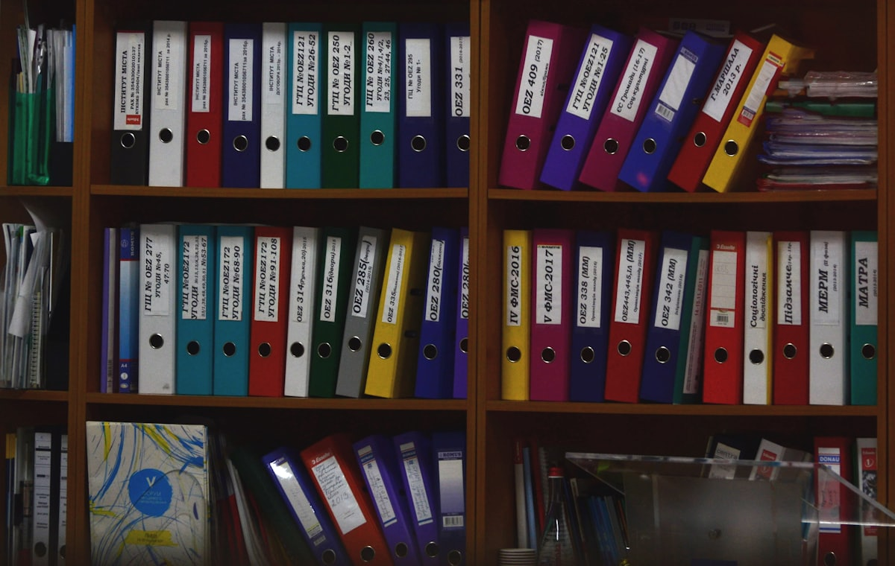

The Melbourne analyst who keeps four hundred stores trading, standardises the fleet, and writes down what the desk used to keep in its head.
Staff report·Modern workplace desk·Melbourne bureau
MMELBOURNE · For seven years Myat Thu has worked the part of IT that people only notice when it stops: the laptop that will not enrol, the store that cannot take payment, the account that should have been closed on Friday.
He is a Service Desk Analyst at IPH Limited, where he sits as the second-level escalation point for the desk, builds machines to the standard operating environment, and works across Active Directory and modern endpoint management.
Before the law firm came retail at national scale. At The Reject Shop he covered more than four hundred stores, clearing forty to fifty tickets on a heavy day and running the estate's imaging, onboarding and hardware repair.
The through-line is not the ticket count. It is the habit of turning a repeat problem into a written process: a dock rollout that ended a stream of failures, a playbook that moved a team off memory, a build standard that gives a new starter access on day one.
Four certifications sit behind that work: MD-102, AZ-900, SC-900 and Google's IT Support Professional Certificate, with SC-300 in progress in a live lab tenant rather than on flashcards.
Continued below ↓
By the numbers
400+Retail stores kept trading
50/dayTickets cleared at peak
2ndLevel escalation for the desk
4Microsoft & Google certificates
The recordPage two
Seven years across retail, consulting and professional services, each posting filed in the order it happened.
Since May 2025
Service Desk Analyst
IPH Limited · Melbourne
Second-level escalation point, guiding the desk
Laptop and device builds to the standard operating environment
Active Directory and modern endpoint support
IT projects, change management and on-call
2023 – 2025
IT Support Analyst
The Reject Shop · Melbourne
L1–2 for 400+ stores; 40–50 tickets a day
Active Directory, Exchange, Teams and M365 end to end
Imaging, onboarding and hardware remediation
Dock replacement rollout, wrote the playbook
2022
Support Engineer
Azured Consulting · Australia
Service desk for a Telstra cloud partner MSP
L3 network and firewall configuration
Client cloud environments and M365 accounts
2019 – 2024
Office Support Assistant
MYER · Australia
Store operations and end-of-day reporting
Online returns, POS and team training
Field reportsPage three
Three problems that kept coming back, and what replaced them.
Fig. 1 One hub monitor carries the desk: a single cable to the laptop, the second screen chained behind it.Photograph: Jannis Brandt / Unsplash
Endpoint · Rollout
Docks out, hubs in
Retail docks were failing constantly across the estate, and every failure cost a replacement and a callout.
Objective
Stop the stream of failing, costly docks across 400+ stores.
Role
Replaced docks with daisy-chained hub monitors; wrote the rollout playbook.
Outcome
Simpler desks, far fewer failures, a process anyone could run.

Fig. 2 What the desk used to hold in its head, filed where anyone rostered on can lift it.Photograph: Viktor Talashuk / Unsplash
ITSM · Knowledge
Memory, written down
The desk leaned on who happened to be rostered; the same issues kept returning to the same people.
Objective
Turn tribal knowledge into a consistent, documented process.
Role
Documented SOPs, knowledge articles and escalation paths; became the L2 point.
Outcome
Faster resolutions and a knowledge base new starters pick up quickly.
Fig. 3 The bench where a machine becomes a standard build, before it ever reaches the person using it.Photograph: Samsung Memory / Unsplash
Identity · Devices
Day-one access
Builds and access were manual and inconsistent, so no two machines left the bench the same way.
Objective
Secure, standardised devices with access ready on day one.
Role
SOE builds, Active Directory and M365 administration, joiner/leaver end to end.
Outcome
Compliant endpoints and a tidy account lifecycle.
Public noticesPage four
Certifications on the record. Press a seal for what it covers and where it earns its keep.
Endpoint Administrator
Intune, Autopilot, compliance, app delivery.
Microsoft · press for detail
Microsoft's certification for deploying, configuring and protecting Windows endpoints at scale with Intune: Autopilot provisioning, configuration and compliance policy, conditional access, app delivery and update rings.
Where it works in my roles
IPH Limited, currentSOE laptop and device builds; modern endpoint support for the firm's fleet.
The Reject ShopImaging, onboarding/offboarding and hardware remediation across 400+ stores, the device lifecycle this certificate formalises.
The foundational Azure certification: cloud service models, core compute, storage and networking services, the security baseline, pricing and governance.
Where it works in my roles
IPH Limited, currentTenant maintenance and Active Directory administration against the Microsoft cloud.
Azured ConsultingMaintaining client cloud environments and M365 accounts for a Telstra-partner MSP.
Fundamentals of Microsoft security, compliance and identity: Zero Trust principles, Entra ID identity and access, threat protection with Defender, governance with Purview.
Where it works in my roles
IPH Limited, currentAnnual IT audit participation, change management and on-call response with a security posture behind them.
Home labConditional access and identity governance rehearsed live in the SC-300 study tenant.
Google's professional certificate covering support from the ground up: troubleshooting method, networking, operating systems, system administration and security basics.
Where it works in my roles
The Reject ShopL1–2 troubleshooting discipline and store networking across a national fleet.
MYERFrontline support fundamentals: POS, reporting and coordinating with non-technical teams.
Notice of intent SC-300 · Identity & Access Administrator, in progress and sat against a live tenant.
At the deskPage five
Currently
Studying SC-300: identity and access
Deepening Entra ID, conditional access and identity governance in a live lab tenant, so the exam and the estate stay the same subject.
Study
BBus, Information SystemsRMIT University · 2019–2021
Diploma, Information TechnologyRMIT University · 2018
Foundation, Information TechnologyTrinity College, University of Melbourne · 2016–2017
On the bench
Microsoft Intune · Entra ID · Windows Autopilot · Azure · Microsoft 365 · Active Directory · PowerShell · Exchange · Teams · Endpoint security · ITSM & change · SOE builds
Situations wantedPage six
IT professional, Melbourne
Modern workplace, endpoint and identity. Full-time or contract. Comfortable as escalation point, happier when the escalation stops arriving. Replies within a day.

 Since May 2025
Since May 2025